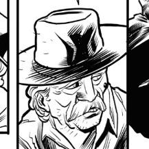

O protagonista da história, um velho cangaceiro “aposentado” lidando com as amarguras do seu passado e do seu presente, buscando mudar seu futuro através da cega busca por vingança.
Euclides
Euclides é um homem simples e humilde, entra para o cangaço depois de presenciar uma grande injustiça com seus pais, injustiça que foi causada por aqueles que deveriam o proteger.
Entre aventuras e missões do cangaço, o jovem Euclides acaba se metendo em algumas enrascadas que o marcam por longos anos.